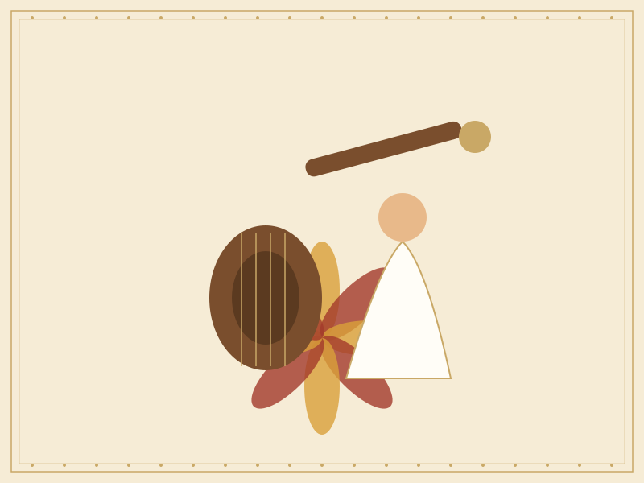

Sample story
Saraswati and the Veena
The goddess of learning, music, and the arts, honoured with books and instruments.

The goddess with the veena
Saraswati is often shown seated on a white lotus, playing the veena, a traditional stringed instrument. She is associated with wisdom, speech, music, and the arts.
Her image is linked to knowledge and creativity, so the qualities she represents are treasured by students, musicians, and artists alike.
Honouring tools of learning
In many households, books, notebooks, and musical instruments are set before her image during the last days of Navaratri. They are placed in her presence as a sign of respect, and the celebration begins anew with study and practice.
Why it is shown in Golu
Saraswati’s figure often sits on the upper steps, close to the display’s offerings. Her presence reminds visitors that learning is itself a form of worship.